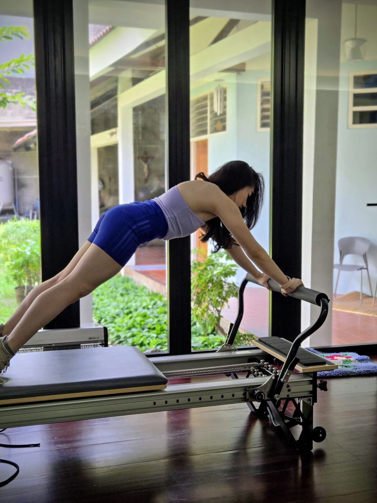
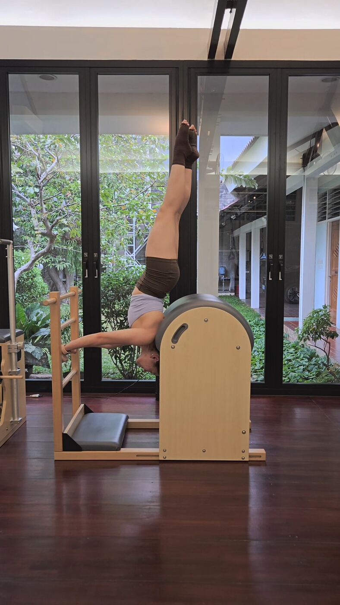
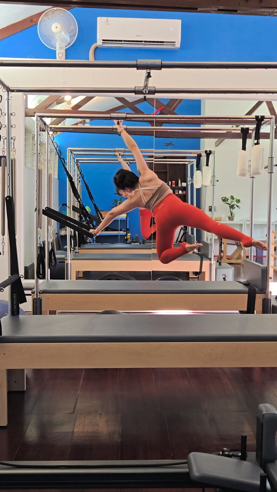

Why I teach
I have a 60-degree and a 41-degree scoliosis curve. Since I was a child, I have tried many scoliosis treatments and seen many doctors in different countries, hoping for a permanent solution. None of them gave me lasting results.
In 2011 I started Pilates with Andry Chang, owner of Body Gravity, hoping to improve my scoliosis. What began as a personal journey became a passion for understanding the human body and helping others. I have kept learning from him ever since.
With over 15 years of learning and experience, I help people improve their posture, movement and quality of life. My focus is not only scoliosis but also knee and shoulder injuries, muscle spasms, nerve compression (including HNP), and spine conditions such as bamboo spine, back pain and neck pain. And as a bonus, you can also enjoy improvements in your body shape.
- 2011
Started Pilates with Andry Chang, owner of Body Gravity.
- 2016
Studied Scolio-Pilates with Karena Thek, California.
- 2017
Became a Pilates instructor under Master Trainer Gerson Nakamatsu, Balanced Body Institute.
- 2018 to 2026
Certified Scolio-Pilates Practitioner.


